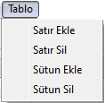
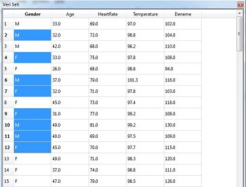
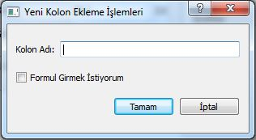
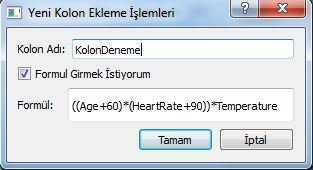
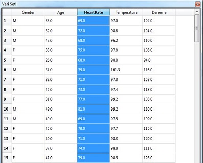

Tablo Menüsü
Tablo Menüsü:
Bu menünün altında bulunan altmenüler ile kullanımda olan veriseti üstünde satırsal veya
sütunsal manipülasyonlar yapılabilir.

Satır Ekle: Bu altmenüyle, aktif verisetinin en alt satırına kolonları boş olan bir satır eklenir.
Satır Sil: Bu altmenüyle, aktif veriseti üstünde seçilmiş bir veya birden fazla satır aynı
anda silinebilir.

Yapılan işlemin sonucunda, herhangi bir hata olmaması halinde işlemin başarılı bir şekilde gerçekleştiğini belirten log PIVA'nın alt
kısmında bulunan
Log Ekranına düşecektir.
Sütun Ekle: Bu altmenüyle, aktif verisetine yeni bir sütun eklenebilir.
Tablo menüsünden
Sütun Ekle altmenüsü seçildiğinde bizi karşılayan öntanımlı ekran aşağıdaki gibidir.

Bu ekrana eklemek istediğimiz sütunun adını girerek sütun ekleme işlemini bitirebiliriz.
Fakat eklemek istenilen sütunun değerlerini elimizde bulunan aktif verisetindeki sütunlardan farklı matematiksel işlemler ile elde etmek
istiyorsak
"Formul Girmek İstiyorum" kutucuğunu işaretlememiz gerekiyor.
Formül seçenek kutusu işaretlendikten sonra formülümüzü girmemiz için bir yazı alanı çıkacaktır. Buraya sütunlar arasında veya
sayılar ile istenilen şekilde bir matematiksel ifade girilebilir. Örnek bir kullanım ve matematiksel ifade aşağıdaki resimde gösterilmiştir.

Sütun Sil: Bu altmenüyle, aktif veriseti üstünde seçilen sütun veya sütunlar
verisetinden tamamiyle kaldırılabilir.

Silinmesi istenen kolon ismine veriseti alanında tıklandığında tüm sütun seçili hale gelecektir, dilenirse aynı şekilde
birden fazla sütun da seçilebilir. Ardından
Tablo menüsünden
Sütun Sil altmenüsüyle seçili sütun veya sütunlar silinebilir.
Yapılan işlemin sonucunda, herhangi bir hata olmaması halinde işlemin başarılı bir şekilde gerçekleştiğini belirten log PIVA'nın alt
kısmında bulunan
Log Ekranına düşecektir.